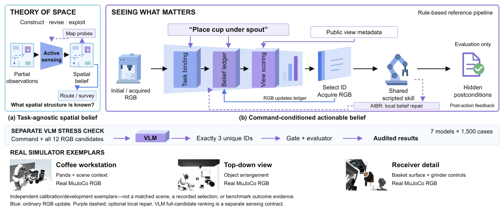
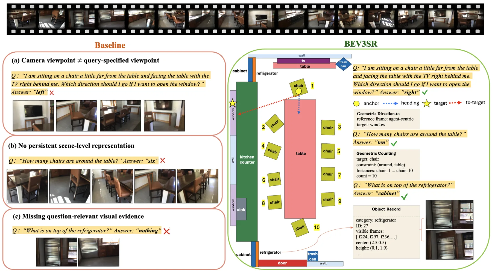
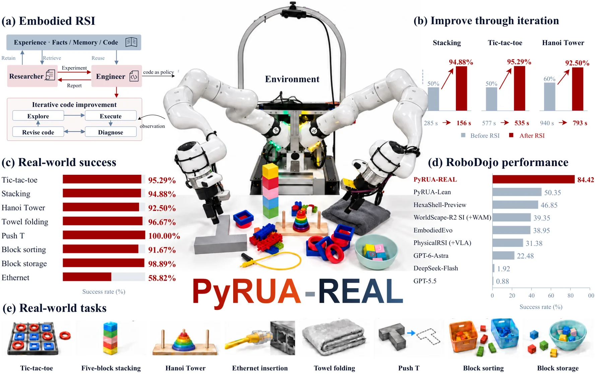

新论文 · 日期 2026-11-06 · score 13 · S层 · 3D/4D Spatial Perception · cs.RO, cs.AI
内容级别：完整单篇海报
作者：Mohamed Elmoghany, Kehan Li, Ruoqu Chen, Tarun Chiruvolu
评分 9.4/10
第一/第三人称数据集手—工具—目标物交互稀疏视角 3D/4DGS留出相机评测六自由度工具位姿机器人策略学习
一句话工作总结：这是一篇数据集与基准论文，而不是新模型论文：贡献在于采集协议、标注链路（SAM2+DINOv2 目标掩码、FoundationPose 六自由度工具位姿、WiLoR 手部 MANO、HO-Cap 式手—工具联合优化）以及统一的三层评测。实验结论有三块：静态 3DGS 上 IS+Difix3D 达到 20.45 dB PSNR / 55.11 MUSIQ（InstantSpla…
创造性工具使用要求智能体在缺少标准工具时，依据物体可供性、物理约束与操作策略重新选择或改造工具，但现有基准多为仿真、交互简化，或缺少完整的手—工具—目标物交互标注。ToolDex 用两路第一人称相机加 8 路第三人称 RGB-D 相机同步采集日常桌面场景中的工具替代行为，显式区分手、工具与目标物三种角色，并覆盖面团、液体、沙粒等可形变目标。数据集包含 10,853 次试验、60 小时、6,158,809 帧带标注数…
Creative tool use is a fundamental human capability and an important step toward general-purpose embodied intelligence. It requires agents to reason about object affordances, physical constraints, and manipula…

新论文 · 日期 2026-11-07 · score 10 · A层 · Robust State Estimation / Uncertainty · cs.RO, cs.CV
内容级别：半海报
作者：Yina Jian, Mingkun Xu
评分 8.8/10
任务条件化证据获取空间—功能信念账本主动感知评测功能分布外泛化隐藏后置条件视觉语言模型诊断
一句话工作总结：方法上有三件东西：空间—功能信念账本（谓词、估计值、置信度、视觉出处、陈旧标记、任务相关性）、规则化 View Belief Map（按缺失谓词的证据增益减视角代价排序）、以及可选的行动诱导信念修正（执行后比对预测与观测后置条件，定位陈旧条目并要求补看）。实验结论是：命令绑定与功能字段是决定性组件——去掉功能字段，功能 OOD 成功率掉到 0.0%；去掉命令绑定掉到 19.7…
空间推理基准通常评估模型能否描述场景，但操作需要的是“取得让当前指令可执行的那部分证据”。同一工作台上，对某个任务有用的视角对另一个任务可能毫无价值。作者提出 Seeing What Matters：在仿真桌面操作中评测任务条件化的可执行空间信念，覆盖咖啡工作站、抽屉/柜子、微波炉/电器三个域共 860 个冻结评测用例；按方法、观测预算与重复推理展开后超过 115,000 个评测回合，分闭环可执行性与同物体功能分布…
When should a robot look at the cup, and when at the portafilter? Spatial-reasoning benchmarks evaluate whether a model can describe a scene, but manipulation needs something more specific: the ability to acqu…

新论文 · 日期 2026-11-07 · score 8 · A层 · Embodied Navigation / VLN / Spatial Reasoning · cs.CV
内容级别：半海报
作者：Fan Zhu, Rui Yu
评分 8.2/10
BEV 度量场景记忆免训练空间推理参考系形式化几何算子执行视觉证据检索RGB-D 视频问答
一句话工作总结：技术链条是：Mask2Former 全景分割 → 逐像素反投影到世界系并投到地面栅格得到 BEV 足迹 → 用实例图关联跨帧同一物体、合并成持久物体记录（含高度范围与支撑帧集合）→ BEV 栅格索引支持按位置查物体 → 形式化器判定问题属于度量还是视觉证据 → 度量路径做参考系实例化（含 agent 视角的朝向假设枚举）与算子执行，视觉路径做物体一致 + 场景上下文的贪心选帧…
视频给视觉语言模型的是顺序、视角局部的观测，而不是持久的度量场景记录；很多三维问题还需要在提问指定的参考系下回答，固定采样若干 RGB 帧很容易漏掉稀疏或被遮挡的线索。BEV3SR 是一个免训练、与骨干无关的框架：它把带相机参数的 RGB-D 视频转成物体级的度量鸟瞰图（BEV）场景记忆，再用空间任务形式化器把自然语言问题拆成参考系、约束、目标与证据类型。需要几何证据的问题交给几何推理器，在指定参考系下用度量记录确…
3D spatial reasoning from video remains challenging for VLMs because videos provide sequential, view-local observations rather than persistent metric scene records. Many questions must be answered in a query-s…

新论文 · 日期 2026-11-05 · score 8 · A层 · Embodied Navigation / VLN / Spatial Reasoning · cs.RO
内容级别：半海报
作者：Qiang Wang, Jianxin Bi, Shulong Jiang, Ruiyang Si
评分 7.4/10
具身递归自我改进编码智能体可复用技能库执行反馈离线程序部署双臂操作
一句话工作总结：这是一篇实证研究论文：不改基础模型参数，改进的是代码、技能库与经验库。关键数字：八任务开发期平均 91.1%；RoboDojo 42 任务 84.42%（PyRUA-Lean 50.35%、GPT-6-Astra 22.48%）；反馈形式对照 B 15.3%、BS 45.8%、BVJ 54.2%，且 BVJ 的优化时间更短（25.4 对 31.8 分钟）；显式任务规格使五类能…
由 GPT-6-Astra 这类模型驱动的编码智能体能写可执行机器人程序，但物理交互能否带来持久的能力提升仍不清楚。PyRUA-REAL 研究“具身递归自我改进”（RSI）：编码智能体把交互经验保存为持久记忆与可复用技能，指导下一次探索与代码修订；研究者智能体负责选目标与技术路线，工程师智能体负责实现、跑试验、诊断失败。作者在双臂 Franka 平台上做了八个真实任务，记录到的开发期平均成功率 91.1%；在 Ro…
Coding agents powered by models such as GPT-6-Astra connect spatial reasoning with executable robot behavior, raising the question of how such agents can produce lasting improvements in robot capabilities from…

新论文 · 日期 2026-11-06 · score 7 · A层 · Embodied Navigation / VLN / Spatial Reasoning · cs.CV
内容级别：半海报
作者：David Yan, Le Xue, Forrest Huang, Qiuyi Zhang
评分 7.9/10
grounded reasoning坐标损坏分析思维链忠实性不可描述参照空间推理评测BrickVision
一句话工作总结：方法上有两条线：分析线用解码期坐标损坏（生成坐标时随机化并重置 KV cache）测 grounding 使用率，发现多个开源 grounded 模型在空间/感知任务上性能几乎不变，只有计数明显下降；训练线从 Qwen3-VL-8B 出发，用 6,368 条高质量 SFT 数据做冷启动再上 GRPO 强化学习，比较 grounded 与纯文本两条配方。结论是 SFT 阶段计数…
让模型在思维链里输出相关位置的文本坐标（grounded reasoning）是解复杂视觉推理的常见做法，但这种做法的收益与边界缺少系统研究。作者先提出一种解码期坐标随机化的分析方法，测量模型是否真的在使用自己输出的坐标；再对 grounding 训练配方做细致消融，发现 grounding 只在计数类任务上稳定有效，在广泛的空间推理与细粒度感知基准上没有显著增益。用合成任务进一步定位原因：当任务需要“难以用语言描…
Grounded reasoning, where a model outputs text coordinates of relevant locations in chain-of-thought reasoning, is a common strategy for solving complex visual reasoning problems. However, the benefits and lim…

新论文 · 日期 2026-11-04 · score 7 · A层 · Embodied Navigation / VLN / Spatial Reasoning · cs.CV
内容级别：半海报
作者：Zhiliang Zhu, Zhiqiang Zhao, Xie'an Jiang, Yingxin Lai
评分 7.6/10
水下空间智能空间数据引擎几何辅助问答特征整流器领域微调多模态基准
一句话工作总结：这是一篇“数据引擎 + 领域微调”的论文：底座 Qwen3-VL-8B-Instruct，全参数解冻（ViT、merger、语言模型），4.27M 问答训 2 个 epoch，64 张 B200 约 25 小时。UPR 插在视觉编码器之后、多模态投影之前：用 DINOv2 ViT-L/14 提先验，预测散射偏置 β 与吸收恢复增益 G，做 F̃=G⊙(F−β)，再用 sigm…
水下空间推理依赖物体边界与几何线索，而散射、色偏与低能见度恰好破坏这些线索；现有水下资源虽提供图像、标注与深度，但对视觉语言模型是碎片化监督。作者提出一个空间数据引擎：先用混合水下增强（HUE）准备图像，再分两路生成问答——二维分支问外观与像平面关系，几何辅助分支把图像区域与深度采样、重建物体框连起来，生成深度、排序、遮挡与分层问题，最后按五类能力组织并经专家过滤，得到 4.27M 问答对。用该语料训练 USI-B…
Underwater spatial reasoning depends on object boundaries and geometric cues that are obscured by scattering, color distortion, and low visibility. Existing underwater resources capture these cues through imag…